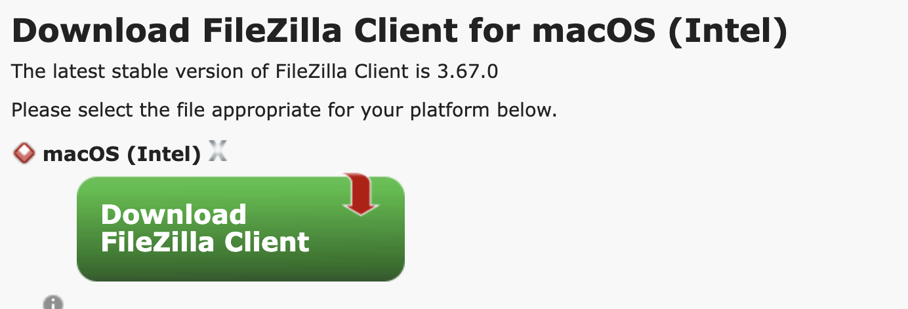
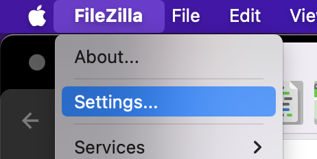
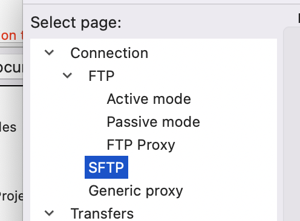
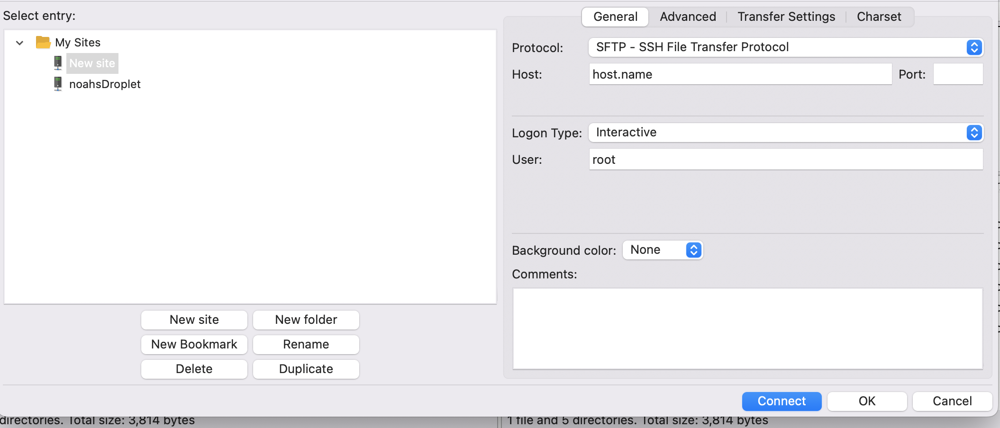

Written 4/19/24
Do you have a website hosted on a remote server, and have a project full of web files that you want to put on the server but don't know how to move them there? Well then Filezilla can be your new best friend! (Filezilla does not know how to be your friend or have the capacity)
This tutorial consolidates information from several Digital Ocean articles as well as my own experience with FileZilla.
When making a website hosted on a cloud website hosting platform such as Digital Ocean, there are many different ways of achieving what you need to get done. One task that must be accomplished is getting files from your local computer onto your server hosted in the cloud. This blog is a tutorial on how to accomplish this secure file transfer protocal, or SFTP.
First, you will need to already have a server and domain hosted on a service of your choice.
The first step to using Filezilla, is downloading it!
Navigate to Filezilla's download page and download the client version of Filezilla.
 Download FileZilla Client
Now that FileZilla is downloaded, we need to create SSH keys on our local computer. These keys will effectively function as a password for our computer and the server to communicate with one another and trust each other. The private key will stay on our local machine, and we will share the public key with the server.
To do this, we just have to type this one command into terminal:
ssh-keygen -t rsa -b 4096
This creates an rsa key of 4096 bits in length. Rsa is a type of cryptographic hashing, which uses a public and private key, like mentioned before. After typing in the command and hitting ENTER, you will be prompted with a few questions. You can hit ENTER a few times to pass these.
Now all that is left is to copy the public key to your server. Use the command below to this.
ssh-copy-id examplename@your_server_address
To make sure this is working, try to log into the server with an ssh command, and you should be able to bypass entering a password now!
Add your rsa key to FileZilla by clicking on FileZilla > Settings on the toolbar. Then, find and go to the SFTP tab. Click Add key file and choose your private key file in Finder.


Now all that is left is to connect to the server so we can perform file transfers. To connect to the server, click the icon in the top left of FileZilla, and it should bring up the Site Manager. Click New site, and input the host domain / address of your server, as well as the desired name for the user. Under 'Protocol' make sure to choose SFTP. For 'Logon type' choose Interactive.

Once you are done inputting the info, click Connect and you should be able to send files to and from your server! Hooray!! The files for your server should be located in '/var/www/yourFolder'. Now you can edit your project folder on your local machine, and just choose to 'upload' the files to the server, and like magic the site gets updated!
Hopefully this tutorial was helpful in your journey of creating a fun website of your own! File transfer between a local computer and a server can make many different tasks exponentially easier, such as editing something locally and then simply connecting with Filezilla to your server and sending it up in seconds.